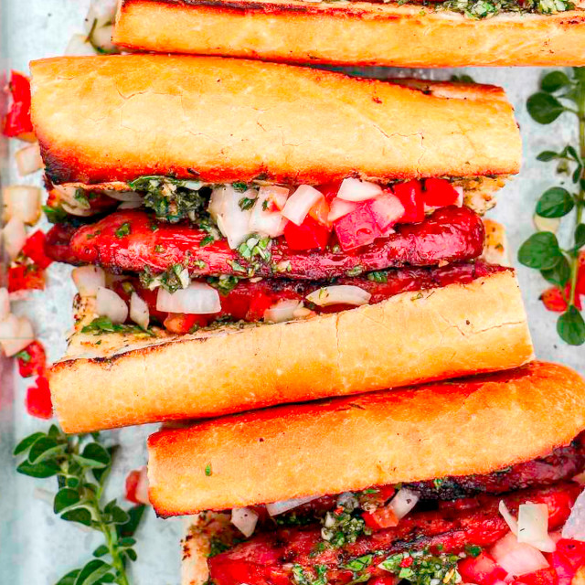

Choripan

The Choripán, affectionately called 'chori', is at the heart of Argentina's street food. It is a grilled Argentinian chorizo sandwich garnished with the country's iconic sauce for meat - chimichurri and often salsa criolla, another popular topping for parrilla (grilled meats).
In Buenos Aires and pretty much everywhere else you go in the country you will see the sandwich sold at food stalls big and small, at markets, at stadiums, beaches - if there are people around you will find Choripán. Another sausage sandwich is the morcipán made with morcilla (blood sausage), but the chori reigns supreme.
Ingredients
- 1 bunch oregano
- 1 bunch parsley
- 2 green onions
- 2 cloves garlic
- 2 tbsp red wine vinegar
- 1 tbsp lemon juice
- 1 tsp red pepper flakes
- 1/4 cup olive oil
- salt and pepper, to taste
- 6 Argentinian chorizo sausages
- 1 large baguette
- Salsa criolla, to taste
Instructions
- Make the chimichurri - finely chop the oregano, parsley and green onions. Mince the garlic. Place them in a mixing bowl and add the vinegar, lemon juice, red pepper flakes and mix well. Finally add the olive oil, mix and season with salt and pepper. Keep refrigerated.
- Heat your grill to medium or medium-high. Slice the baguette in four pieces and each one of them across lenghtwise so you can warm up the soft middles on the grill.
- Grill the chorizo sausages until cooked through, turn often to sear them on all sides. When cooked, slice them lengthwise in halves and grill the flat middles until they brown nicely. Place the bread nearby to warm it up a bit and give it subtle grill marks.
- Assemble - slather the bread with a bit of chimichurri, nestle in a couple of sausage halves, top with salsa criolla and finish with more chimichurri. Optional - wrap in deli paper to keep together before serving to others. Enjoy immediately.